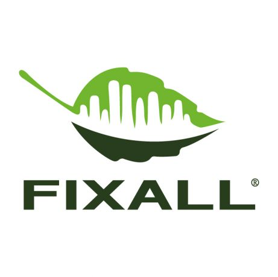

Материал компании
MwPCc2sUV6C6gQ
Открыть у участника ↗Источник не удалось загрузить при сборе. Проверьте оригинальную ссылку.

MITEX 2026 · Россия · Стенд 7В1601
Карточка проверена 10 ноября 2026, 09:28 · Источник ↗ · Снимок оригинальной карточки ↗
FIXALL — международный промышленный бренд, специализирующийся на высококачественных материалах для строительства и ремонта. Продукция бренда решает широкий спектр профессиональных задач — от масштабных инфраструктурных проектов до частного ремонта. С 2020 года эксклюзивным представителем FIXALL в России и странах СНГ является ООО «Группа Компаний Фиксал». Опираясь на опыт работы на рынке с 2008 года, компания построила одну из самых масштабных сетей сбыта в регионе. Сегодня продукция FIXALL представлена более чем в 95% профильных строительных и хозяйственных магазинов Москвы и Московской области. География поставок охватывает тысячи торговых точек от Калининграда до Владивостока, а также ключевые рынки Кавказа и Средней Азии. Ассортимент FIXALL: • профессиональные и бытовые полиуретановые монтажные пены, включая зимние, огнестойкие и клей-пены; • силиконовые, акриловые, кровельные и высокотемпературные герметики; • монтажные клеи и жидкие гвозди; • малярные, упаковочные, армированные и алюминиевые ленты; • плёнки, тенты и сопутствующие товары. FIXALL в цифрах: • более 4000 оптовых клиентов по всей России и СНГ; • свыше 1 000 000 баллонов монтажной пены реализовано за последний год; • главный офис и распределительный центр в Москве, собственные складские мощности и развитая логистика. FIXALL — это стабильное премиальное качество, широкий выбор и надёжное партнёрство, подтверждённые доверием профессиональных строителей и крупных компаний. Приглашаем дистрибьюторов, строительные сети и подрядчиков к сотрудничеству.
Контакты Rublevo Business Park Телефон: +7 800 600 0012 E-mail: contact@fixallgroup.ru Адрес: 143401, Россия, Москва, МКАД 64 километр, 2 Веб-сайт: http://www.fixall.ru E-mail: contact@fixallgroup.ru Телефон: +7 800 600 0012

Материал компании
Источник не удалось загрузить при сборе. Проверьте оригинальную ссылку.